“Whose turn is it again?”
The clock runs for the person playing, not for the table. One tap and it moves on. The Lock Screen shows it too, for when the phone is lying on the table.
Timatch keeps the clock at the table, adds up the scores, and remembers what you played — whose turn it was, how long everyone thought, and who came out on top.
The app is on the App Store. Timatch Web is still in beta and comes to the Play Store later.
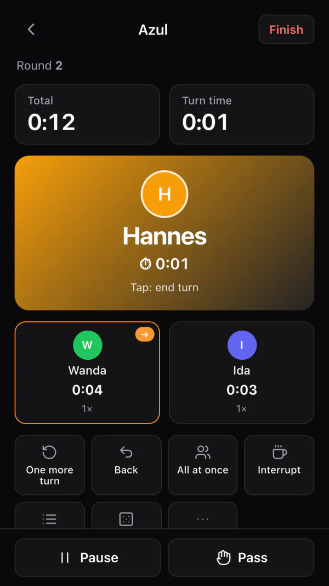
Timatch answers them before anyone has to ask.
The clock runs for the person playing, not for the table. One tap and it moves on. The Lock Screen shows it too, for when the phone is lying on the table.
The score sheet knows your game's rows and adds them up itself. Ties are spotted, and so are games where the lowest score wins.
Your collection with cover art, player counts and playing time — and the whole history with it. Two years on, you'll still know when Ark Nova was last on the table.
Total time, a turn limit, or a real chess clock with a time bank for each person. Fixed order or free — and when everyone plans at once, the clock runs for everyone at once.
Time left at a glance — with a turn limit, with a time bank, and on every device, right down to the Apple Watch.
Five minutes and one minute before time runs out, a short sound and a vibration — as a notification in the background.
Whose turn it is stays on the Lock Screen — even when the phone is just lying on the table.
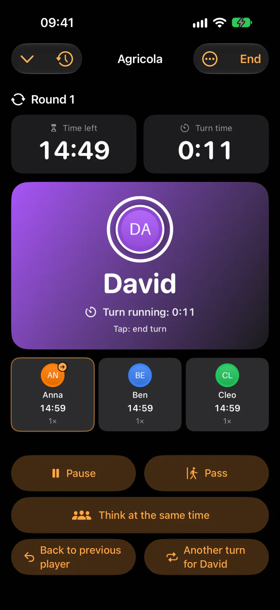
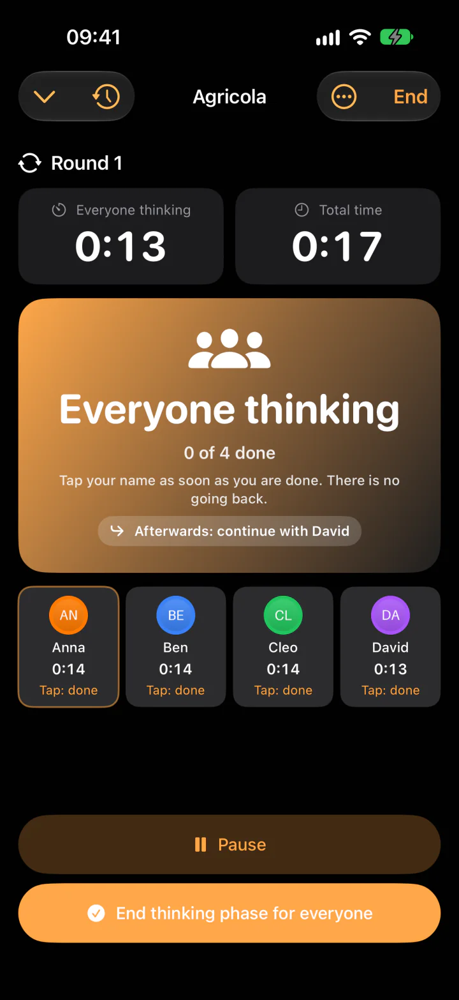
For running over — to the second or per minute started, with exceptions for kids and newcomers.
A restart, a flat battery, a crash: the play picks up exactly where it was — to the second.
Dice, coin flip, drawing lots and a sand timer — for everything that usually rolls under the sofa.
For Azul, one number is enough. For Agricola you add up fields, pastures, livestock, stables and begging cards — and get it wrong. So you create the rows once, and Timatch asks for each of them, does the adding and crowns the winner.
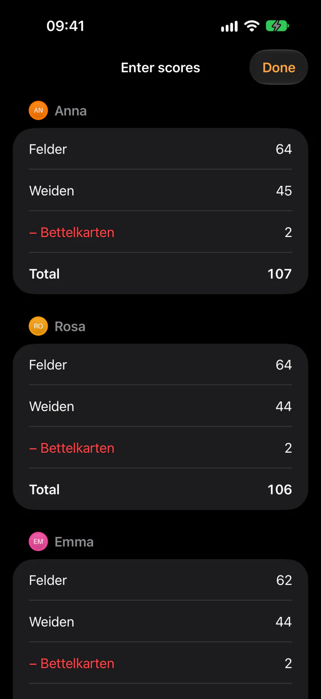
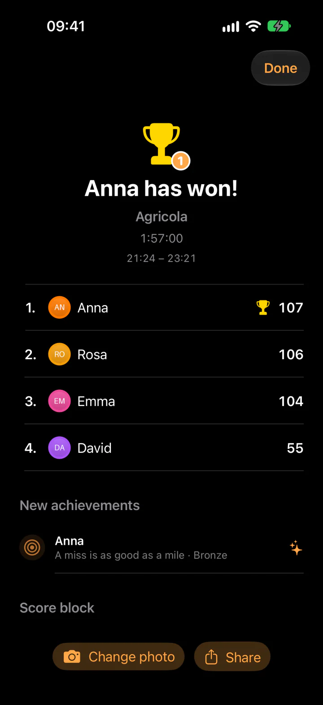
Timatch is built for iPhone Duo, not just stretched to fit. Folded, it's a handy table clock. Unfolded, it's the Duo table: the person whose turn it is, large, with the time ring, and the whole round next to it with times and turns — everyone at a glance, no scrolling.
Standing half open like a small laptop: the person whose turn it is at the top, the round and the buttons below. The hinge stays clear.
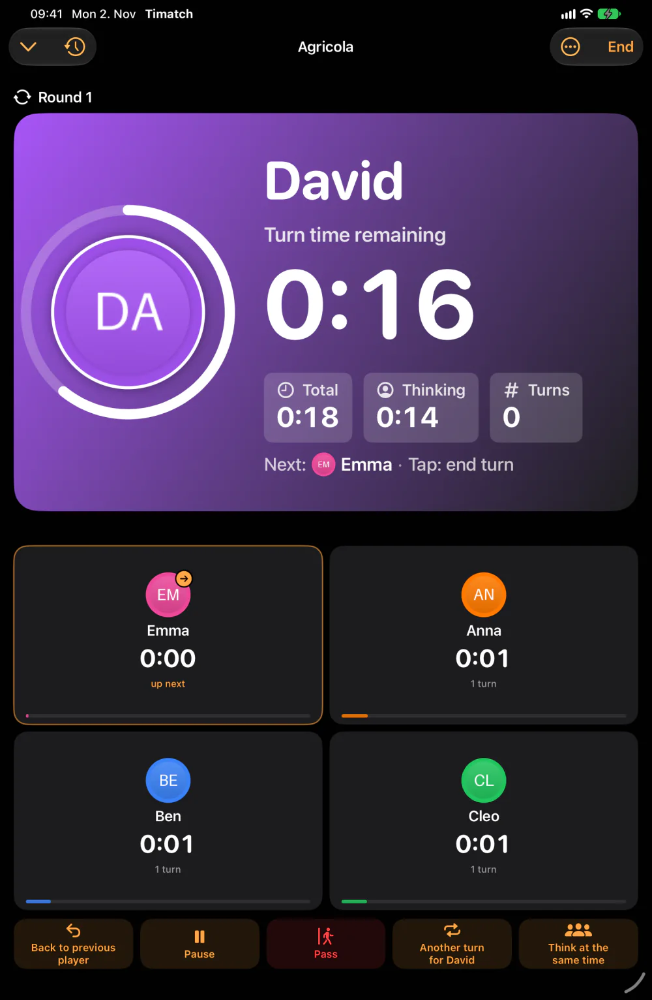
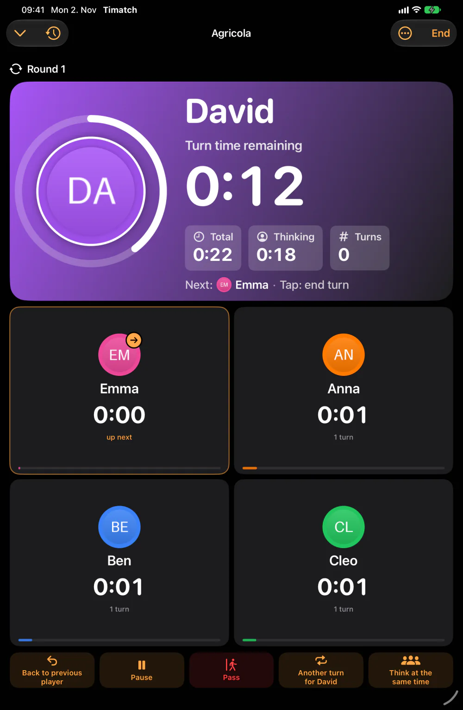
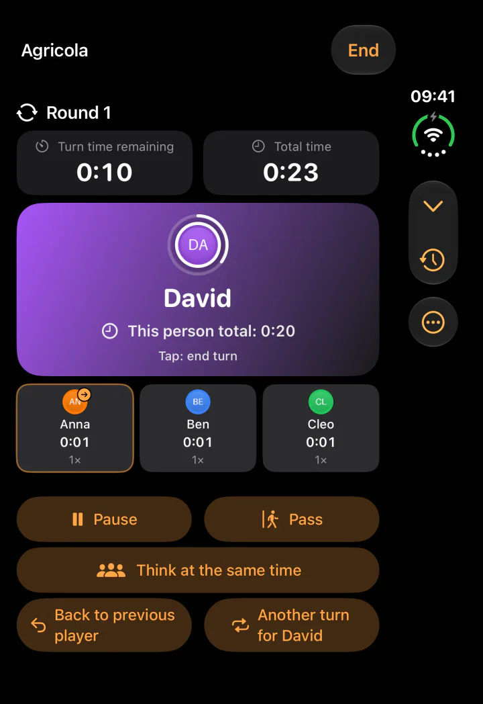
Add games by hand or bring them over from BoardGameGeek — one at a time or your whole collection via your username. Timatch works from your plays, not from somebody else's averages.
Expansions on the base game, a wishlist, your own rating and tags.
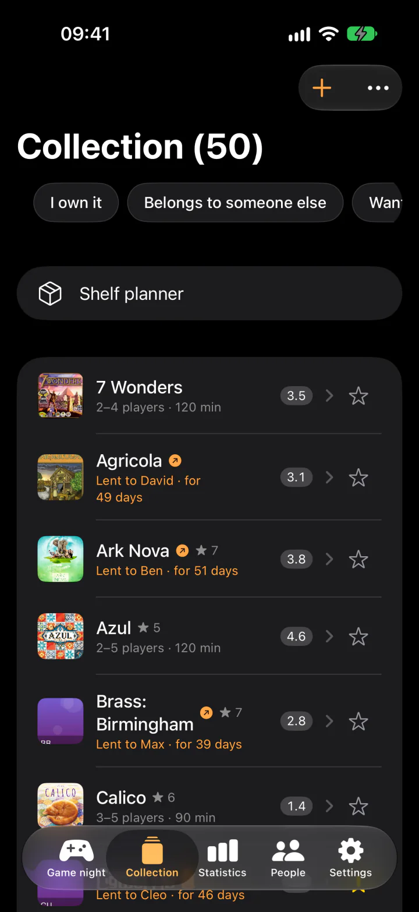
Win rates, records and awards per person, and your real playing time by player count.
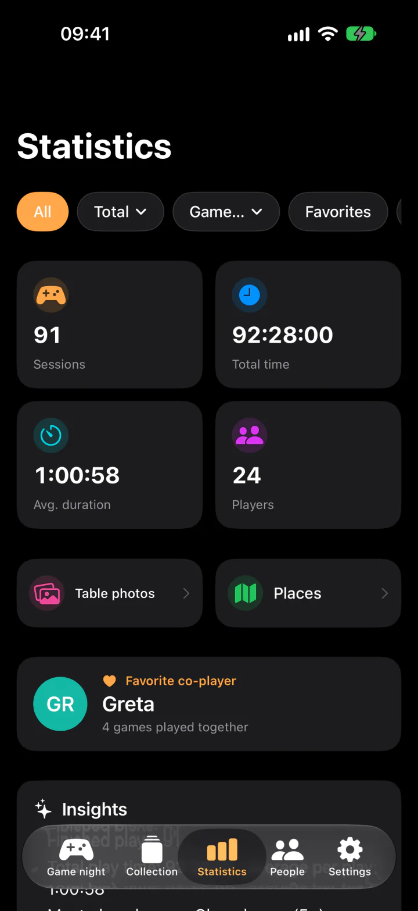
Works out what actually fits into your Kallax.
Most wins, highest score, biggest margin — and 17 awards to collect.
A suggestion by group size, time and mood — always with a reason. (Pro)
All included — no separate app, no second purchase.
The table. Timer, scores, collection — plus Live Activity, widgets and Siri: “Whose turn is it?”
Folded a table clock, unfolded the Duo table with everyone at a glance.
Big in the middle of the table — or as a second display when there's no Apple TV.
Your own turn time on your wrist, with the time ring and a tap when it's your turn.
The score big enough for everyone, driven from the iPhone. No Apple TV? AirPlay or a cable will do.
Timatch Web: the same game table as a web app — install it, works offline, no account.
The app for Apple devices and Timatch Web for Android and any browser follow the same rules, sync through the Timatch account and hand running plays to each other. What works where, honestly listed.
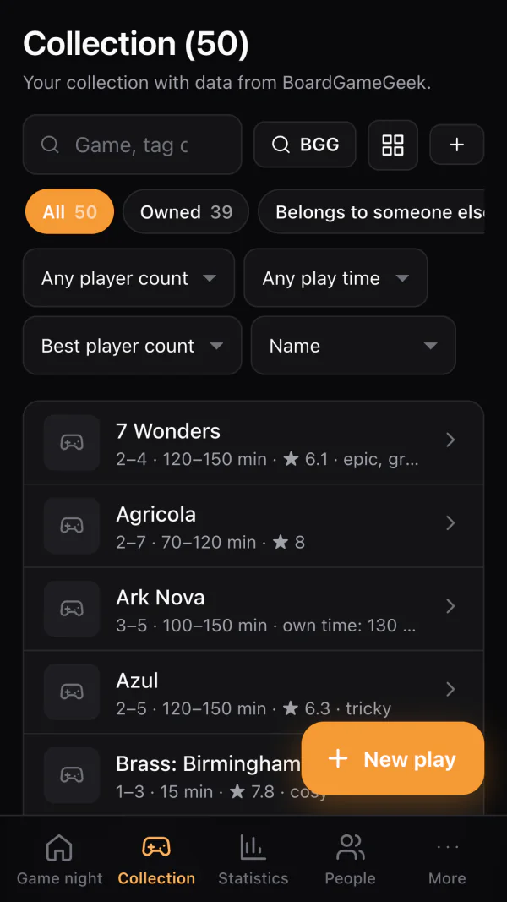
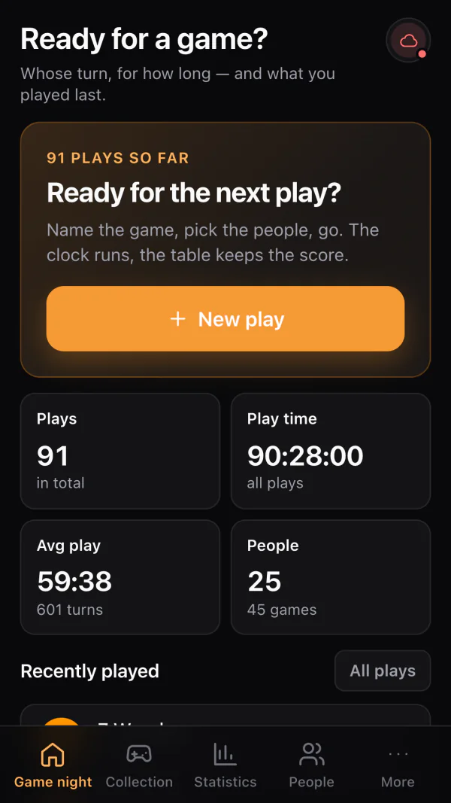
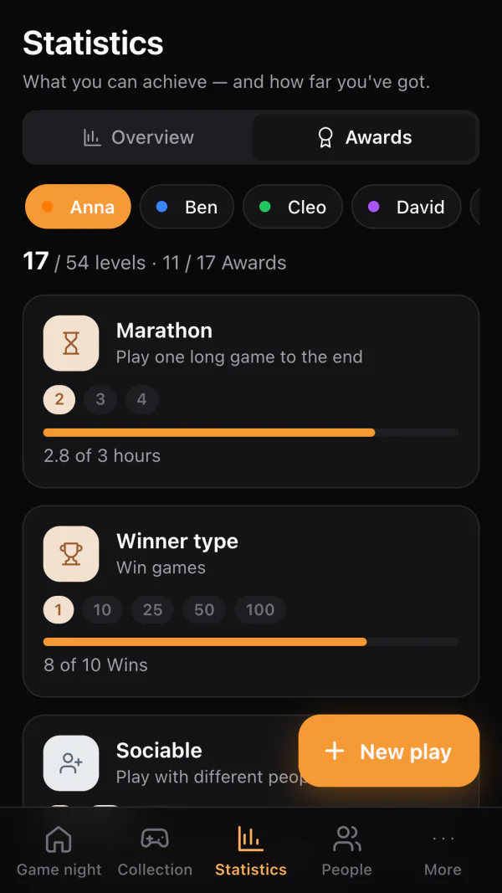
| Feature | TimatchiPhone · iPad · Duo · Watch · TV | Timatch WebAndroid · browser |
|---|---|---|
| Timer | ✓Turn limit, countdown, chess clock, free order, time ring | ✓Turn limit, countdown, chess clock, free order |
| Time rules | ✓Penalty points, exemptions, thinking phase, interruption, teams | ✓Penalty points, exemptions, thinking phase, interruption, teams |
| Scores | ✓Score sheets, rounds, minus rows, turn history | ✓Score sheets, rounds, minus rows, turn history |
| Memory | ✓People, statistics, records, awards, all plays with search | ✓People, statistics, records, awards, all plays with search |
| Collection | ✓BoardGameGeek, lending, shelf planner | ✓BoardGameGeek, lending, shelf planner |
| Table display | ✓Apple TV, iPad, AirPlay or cable, any browser via a code | ✓Any browser via a code, Chromecast |
| Table helpers | ✓Dice, coin, drawing lots, sand timer | ✓Dice, coin, drawing lots, sand timer |
| Sync | ✓iCloud and Timatch account (email, Apple, Google) | ✓Timatch account (email, Apple, Google) or cloud backup with a code |
| Hand over a play | ✓iPhone ↔ iPhone on Wi-Fi, to Timatch Web via QR code, text or file | ✓Via QR code, text or file — to the iPhone app too |
| AI | ✓On the device, no account and no key | ✓With your own Claude or ChatGPT key |
| Apple Watch, Live Activity, widgets, Siri | ✓Turn time on the wrist, Lock and Home Screen, “Whose turn is it?” | — |
| iPhone Duo | ✓Dedicated Duo table, table clock when folded | — |
| Photograph the score sheet | ✓Apple Intelligence reads the sheet (iOS 27) | — |
| Runs everywhere | — | ✓Install, offline, Android and desktop |
Timatch needs no account and no sign-in. There is no analytics kit in the app and no advertising identifier. Your game nights only end up on our server if you create an account yourself.
Collection, people and plays live locally. Sync via your own iCloud or the optional Timatch account if you want it — and turn either off if you don't.
No login, no email address, no registration needed. The app opens and it's there — the web version too. An account for several devices is optional.
Timatch only goes online for things you start yourself: BoardGameGeek, maps, a table display or your account.
Everything exports to a file and reads back in — including if you decide to leave.
Collection, plays, scores and statistics cost nothing. Pro unlocks the depth that frequent players ask for.
Prices in euros including VAT; your local price is shown in the App Store. Purchases run through the App Store; subscriptions renew automatically unless cancelled at least 24 hours before the end of the period. All three options include Family Sharing. A few Pro features live in expert mode — a switch in Settings that reveals the less common tools. Timatch Web (Android & browser) is completely free during the beta. Pro belongs to your Timatch account — if you use both app and web, you only buy once.
Yes. Timatch Web runs at app.timatch.de in any current browser – on Android, Windows, Mac, Linux and on iPhone too. No installation and no account; if you like, install it to your home screen like an app.
Timatch Web is completely free during the beta. In the app for iPhone, iPad, Apple Watch and Apple TV, the collection, plays, scores and statistics are free; Timatch Pro costs €1.99 per month, €14.99 per year or €34.99 once.
Yes, through Timatch Web in the browser. On Android you can install it as an app from the browser menu, and it then works offline too. A Play Store version will follow.
Yes, with a layout of its own. Folded, Timatch is a handy table clock; unfolded, it becomes a game table with everyone at a glance – flat, held like a book or standing half open like a small laptop.
Yes. Besides a turn time limit and total time there is a chess clock: everyone gets their own time budget that only runs during their turn. Plus passing, rounds, simultaneous thinking phases and penalty points for running over.
No. Timatch works without signing in and your data stays on your device. An optional Timatch account syncs plays, people and games between the app and the browser – without a password.
Yes. Timatch imports your collection via your BoardGameGeek username or a BGG CSV file, including player count, playing time and cover image.
More answers in the app support page and the Timatch Web help — or write to support@timatch.de.
Ready in your browser in ten seconds — or as an app for iPhone, iPad, iPhone Duo, Apple Watch and Apple TV.